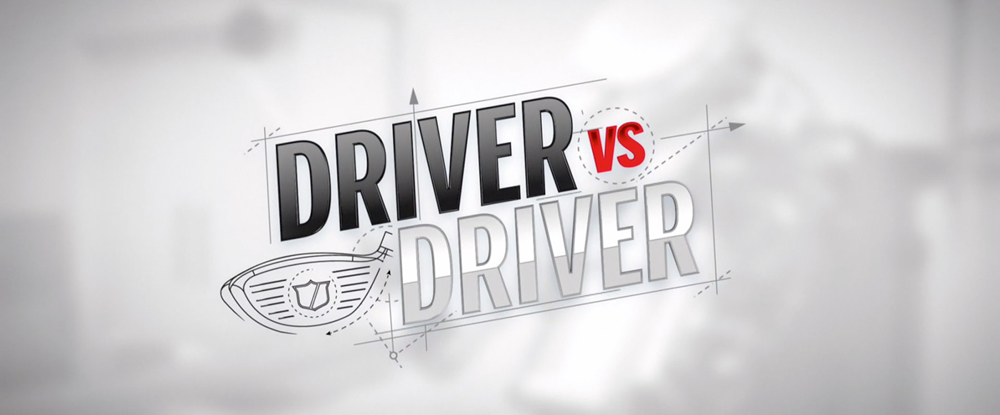
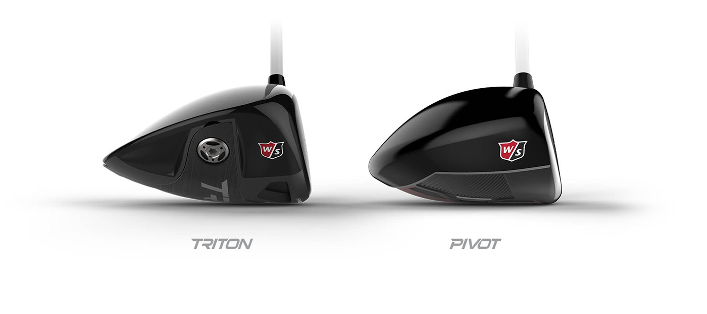
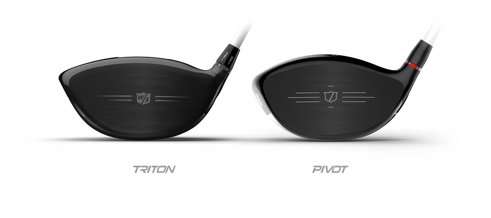
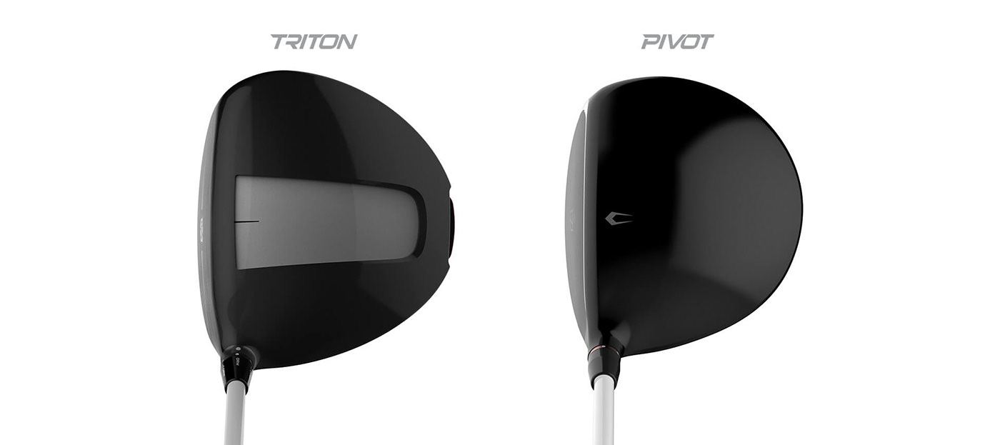
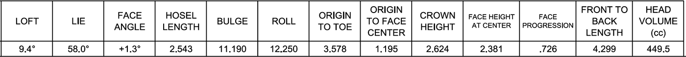
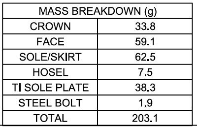
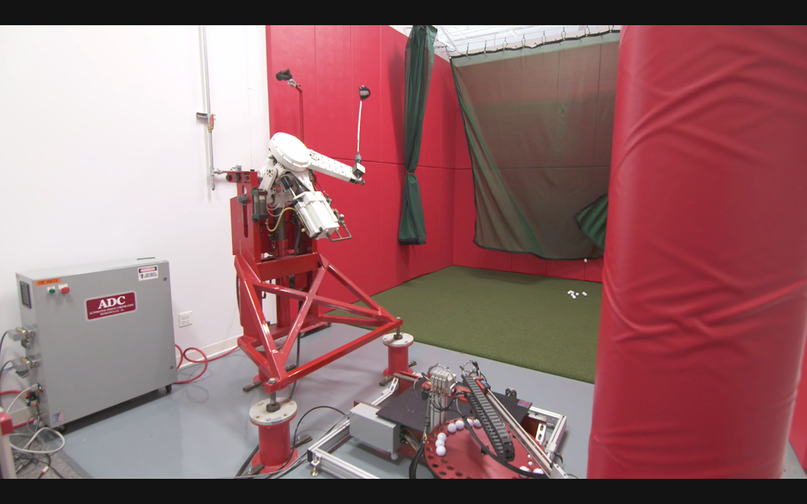
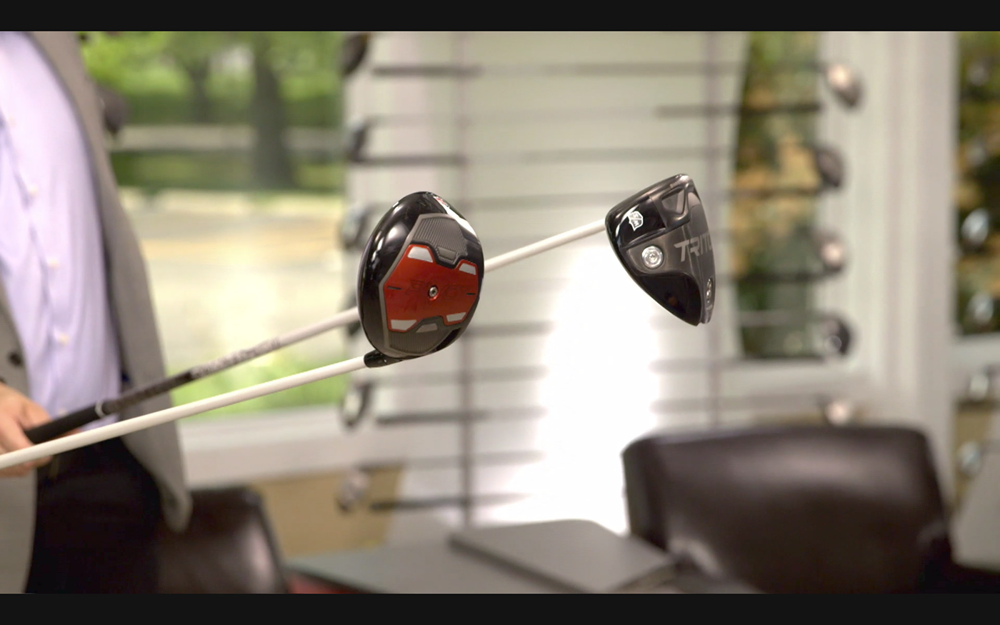

Wilson Golf Driver
Golf driver design for Driver vs. Driver — from napkin sketch to hittable prototype, featured on The Golf Channel.

NDA — Most details restricted. I'm happy to discuss the design process and technical challenges in a conversation.
Overview
I was part of Wilson's Driver vs. Driver reality TV show as an Industrial Design expert. It was a fantastic experience showcasing my entire design skillset — from sketching, concept modeling, and visualization to branding.
The winner of the contest walked away with half a million dollars. I walked away with a depth of expertise in golf clubs, a free driver, and glowing skin — thanks to repeated applications of stage makeup.
My Contribution
I helped design the runner-up driver, Pivot. The concept was submitted by contestant Gavin Wallin, but I was tasked with taking a napkin sketch to a hittable prototype. The concept contained a unique interchangeable weight system that was revolutionary.
Competition
The season finale was a head-to-head between the top two drivers — Pivot and Triton. Pivot would ultimately lose to Triton, the winning driver designed by my manager Darren Chilton, a well-known golf fanatic inside Altair.
Most details of this project remain under NDA, but the season finale brought the two drivers to a direct physical comparison across head geometry, face design, and crown profile.



Challenges
Golf drivers are extremely complex with highly precise geometry, both inside and outside. The USGA equipment rules handbook defines the constraints when designing drivers:
- Every gram counts — the lighter the head, the better.
- User experience mattered when designing interchangeable weights.
- Surfaces had to be of high quality to facilitate smooth production, especially fillets around edges and the transition from face to hosel.
Design
Drivers have the lowest loft angle in a golf set — they can hit far but not high. The design of the face had to be so precise that it often involved moving one or two control points.

The driver is built by fusing four main parts: crown, face, sole, and hosel. Most drivers are made with titanium, and towards the finale, every 0.1g was critical.

The show was held at Wilson HQ in Chicago, and was one of the most interesting and challenging projects I have undertaken. Their incredible facility and supportive team gave me an opportunity to learn the intricacies of golf club design.

Outcome
As someone who hits the tee once in a while, I now have renewed respect and admiration for what goes into that head every time I swing my club.
